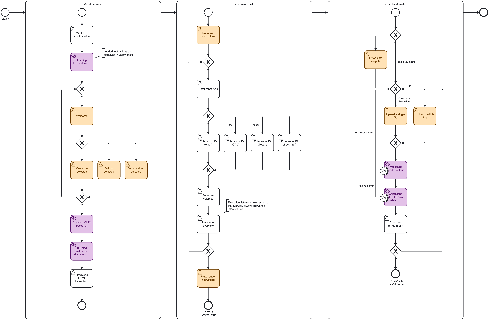

Pipetting Performance Workflow (Roche pRED project)
This repository contains the source code for the pipetting performance workflow developed for the I2S and ADME chapters at Roche pRED. The presented workflow provides a precise and intuitive approach for testing the pipetting accuracy and precision of automated liquid handling systems. It was adapted for public use to work through a Jupyter notebook instead of the proprietary AutoLab platform used internally at Roche.

Figure 1: Pipetting performance workflow steps. The gravimetric test was not implemented in the standalone version of the workflow which is provided here.
Project overview
Three distinct run options are provided to suit different scenarios and time constraints. Please refer to the following table when deciding on which one to choose. Use one of the linked notebooks depending on your choice:
| Quick run | Full run | 8-channel run |
|---|---|---|
| 96- or 384-channel heads Uses 1 microplate Takes 20-30 minutes Quick performance check Quick example report |
96- or 384-channel heads Uses at least 3 microplates Takes ~45 minutes Thorough statistical analysis Full example report |
8- or single-channel heads Uses 1 microplate Takes 20-30 minutes Thorough statistical analysis 8-channel example report |
Table 1: Comparison of different run mode options. Run one of them by selecting one of the linked notebooks. Open the example reports to get an idea of the expected output of each mode. These HTML reports are hosted via GitHub pages.
Figure 2: Pipetting performance BPMN workflow modeled in Camunda Modeler. The AutoLab integration was configured with this BPMN.